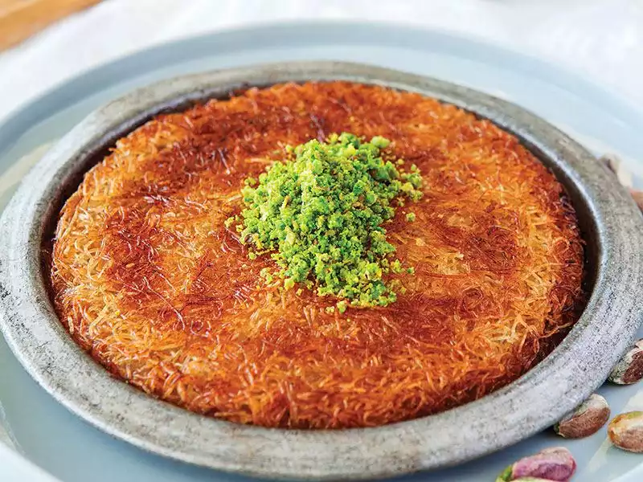

<!DOCTYPE html>
<html lang="tr">
<head>
    <meta charset="UTF-8">
    <meta http-equiv="X-UA-Compatible" content="IE=edge">
    <meta name="viewport" content="width=device-width, initial-scale=1.0">
    <title>Künefe Tarifi</title>
</head>
<body>
    
</body>
</html>

<h1>Künefe Tarifi</h1>
<p><Strong>Kaç Kişilik:</Strong>4-6 - <strong>Hazırlama Süresi:</strong> 30 dk <strong>Pişirme Süresi:</strong>20dk</p> 
<h2>Malzemeler</h2>
<ul>
    <li>250 gram tel kadayıf</li>
    <li>150 gram tuzsuz künefe peyniri</li>
    <li>4 yemek kaşığı tereyağı</li>
    <li>1 çay kaşığı pekmez</li>
    <h3>Şerbeti için:</h3>
    <ul>
        <li>2 su bardağı su</li>
        <li>2 su bardağı toz şeker</li>
        <li>1 çay kaşığı limon suyu</li>    
    </ul>
    <h3>Üzeri için;</h3>
    <ul>
        <li>Toz Antep fıstığı</li>
        <li>Süt kaymağı veya dondurma(isteğe bağlı)</li>
    </ul>
</ul>



<h2>Yapılışı</h2>
<ol>
    <li>İlk olarak künefenin şerbeti hazırlanır. Şerbet için, su ve şeker bir tencereye alınarak kaynamaya bırakılır. (Şerbetin dibine tutmaması için ara ara karıştırılır.)</li>
    <li>Şerbet kaynamaya başlayınca şekerin kesilmemesi için 1 çay kaşığı limon suyu eklenip 10-15 dakika kadar daha kaynatılır ve şerbet soğumaya bırakılır.</li>
    <li>Künefe için, tereyağı kısık ateşte erimeye bırakılır.</li>
    <li>Eriyen tereyağı bir kenara alınarak bekletilir.</li>
    <li>Tereyağı donduktan sonra altında tereyağının suyu olacaktır bu suyu kullanmayın.</li>
    <li>Hafif donmuş olan tereyağına 1 çay kaşığı pekmezi eklenerek muhallebi kıvamına gelecek şekilde karıştırılır.</li>
    <li>Varsa künefe tepsisi yoksa alüminyum veya teflon tavanın altı bu pekmezli yağ karışımı ile yağlanır.</li>
    <li>Kadayıf tel tel tiftiklenerek ayrılır.</li>
    <li>Ardından bıçakla 1 cm kalınlığında kesilerek iki parçaya ayrılır.</li>
    <li>Ayırdığımız kadayıfın bir parçası yağlanmış tepsinin dibine aralarda boşluk kalmayacak şekilde serilir.</li>
    <li>Rendelenmiş peynirler kadayıfın üzerine yayılır.</li>
    <li>Diğer kadayıf da peynirin üzerinde boşluk kalmayacak şekilde kapatılır.</li>
    <li>Kenarları düzeltilir ve başka bir tepsi altıyla veya eliniz ile üzerine bastırılır.</li>
    <li>İyice bastırarak arasında boşluk kalmamasını dikkat edin.</li>
    <li>En kısık ateşte ocağın üzerinde tepsi çevrilerek pişirilir.</li>
    <li>Altının tamamen kızardığından emin olduğunuzda tepsiyi bir tabağın veya tepsinin üzerine ters çevrilir ve diğer tarafının pişmesi için ikinci tepsinin içi de yağlanır.</li>
    <li>Kızaran kısım üstte kalacak şekilde künefe tepsiye yerleştirilir ve altı kızartılır. Böylece iki tarafı da kızarmış olur.</li>
    <li>Şerbeti kenarından başlanarak dökülür. Antep fıstığı veya süt kaymağı ile servis edilir. Afiyet olsun.</li>
</ol>

<h3>Püf Noktalar</h3>
<ul>
    <li>Hemen yenmeyecekse şerbeti daha sonra dökülür. Künefe piştikten 1 dakika sonra şerbeti dökülür ve şerbet oda sıcaklığında soğuk olmalıdır.</li>
    <li>Künefe, tuzsuz künefe peynirinden yapılır. Bulamazsanız  eğer dil peyniri ile yapabilirsiniz ama aynı tadı vermeyecektir.</li>
</ul>
<h4>Künefe Servis Önerisi</h4>
<ul>
    <li>Dilerseniz künefenizi kaymak ya da dondurma ile servis edebilirsiniz.</li>
    <li>Künefeyi, tarife özgü olan alüminyum kaplarda sunabilirsiniz. Teflon tavada pişirdiyseniz pizza dilimi gibi üçgen dilimler halinde keserek ikram edebilirsiniz.</li>
</ul>
<h4>Künefe Kaç Kalori?</h4>
<ul>
    <li>Orta büyüklükte 1 dilim künefe yaklaşık olarak 380 kaloriye denk gelmektedir.</li>
</ul>
<h4>Künefe Hangi Yöreye Ait?</h4>
<ul>
    <li>Künefe birçok medeniyete ev sahipliği yapmış,leziz mutfağı ile Hatay'a aittir.</li>
     <hr>
    <a href="https://www.nefisyemektarifleri.com/kunefe-nasil-yapilir/" target="_blank">Tarif Sahibi</a>
    
